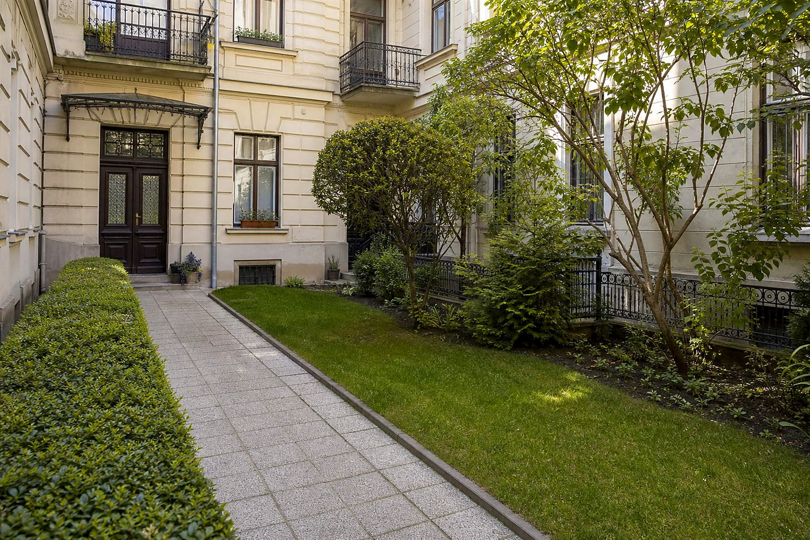
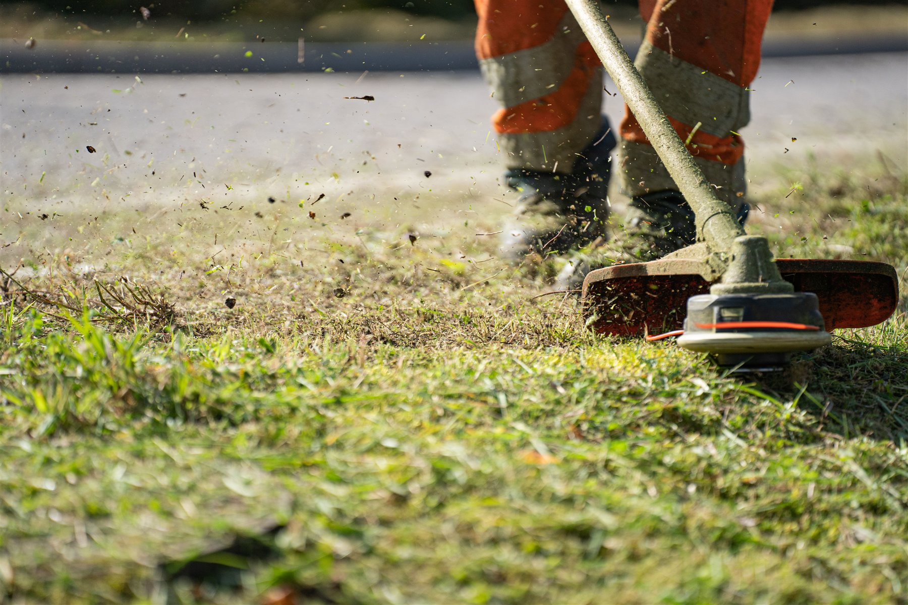
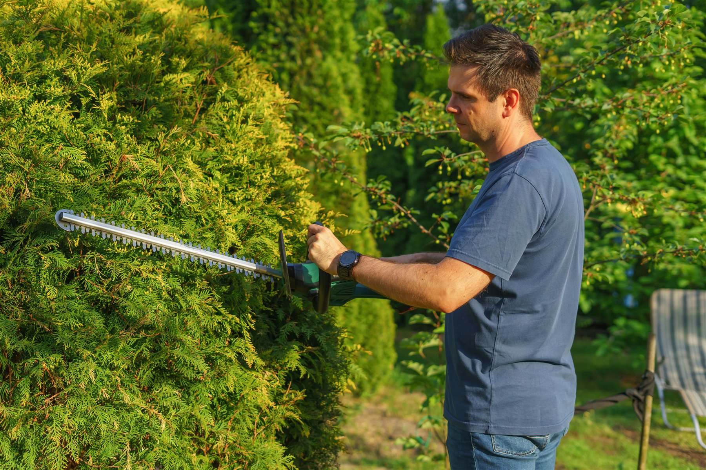
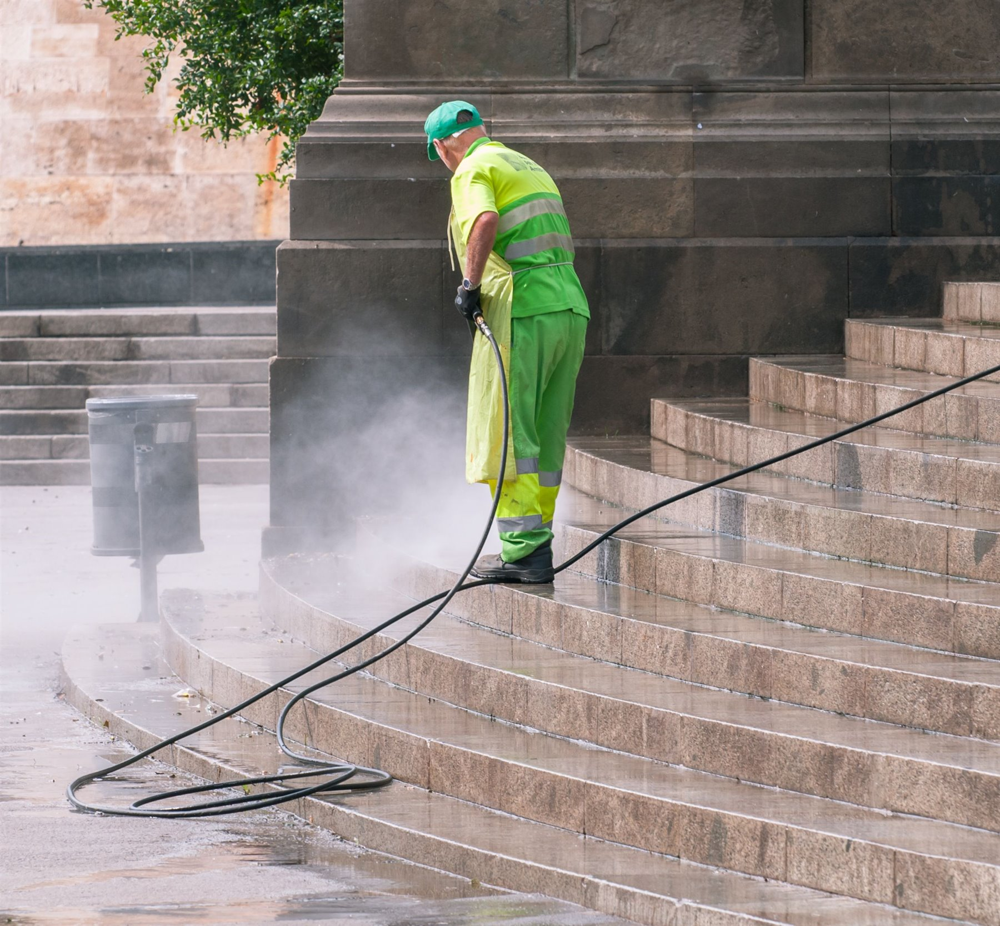

Kommunikation auf Ungarisch und Deutsch mit Eigentümern, Verwaltern, Airbnb-Gastgebern und Büroansprechpartnern.
Gartenpflege in Sopron
Gepflegte Gärten, Höfe und Außenbereiche für Immobilien in Sopron.
Rasenmähen, Heckenschnitt, Unkrautentfernung, saisonale Aufräumarbeiten und praktische Außenpflege für Innenhöfe von Stadtwohnungen, Gärten an den Hängen der Lővér-Berge, Wochenendhäuser, Airbnb-Immobilien, Büros und vom Ausland aus verwaltete Immobilien in Sopron. Koordination auf Ungarisch und Deutsch, Fotoupdates und klare Terminplanung.

Worauf es ankommt
Klare Aufgabenliste, ordentliche Außenpräsentation und Foto-Updates.
Fotoaktualisierungen können den Ausgangszustand, wichtige Außenarbeiten und das fertige, aufgeräumtere Ergebnis zeigen.
Abgestimmt auf Gärten in Sopron, Innenhöfe von Wohnanlagen, Grundstücke an den Hängen der Lővér-Berge und Außenbereiche von Büros.
Die Bilder auf dieser Website sind illustrative Beispiele für typische Arbeitsabläufe und erwartbare Ergebnisse.
01
Bei welcher Gartenpflege können wir helfen?
Ein Garten macht einen besseren Eindruck, wenn Rasen, Hecken, Wege und Eingangsbereiche in Ordnung gehalten werden. Das Ziel ist eine praktische Präsentation im Freien: keine überbaute Landschaftsgestaltung, sondern regelmäßige und gut organisierte Pflege.
Rasenmähen und Kantenschnitt
Mähen kleinerer Gärten, Wohnungsgrünflächen, Innenhöfe und Außenbereiche vor der Vermietung oder Übergabe, damit die Immobilie gepflegter aussieht.
Heckenschnitt und Strauchschnitt
Beseitigen Sie überwucherte Hecken, Äste, die Eingänge versperren, unordentliche Sträucher und sichtbar überwuchertes Grün auf kontrollierte und praktische Weise.
Unkrautentfernung und Außenordnung
Entfernen von Unkraut auf Wegen, Eingängen, Rändern, kleinen Beeten und Hofflächen, wo kleine Details den Gesamteindruck stark beeinflussen.
Saisonale Reinigung
Vorbereitung im Frühling, Pflege im Sommer, Aufräumen von Laub und Grünabfällen im Herbst sowie regelmäßige Auffrischung im Außenbereich vor der Nutzung oder Übergabe.
Außenbereiche für Airbnb und Vermietung
Eine schnelle, ordentliche Auffrischung von Gärten, Eingängen und Innenhöfen vor der Ankunft der Gäste, dem Fotografieren, dem Mieterwechsel oder der Besichtigung.
Geplante Einsätze und Foto-Updates
Bei Bedarf können wiederkehrende Wartungsbesuche und Fotoaktualisierungen vereinbart werden, insbesondere für Eigentümer im Ausland und Immobilienverwalter.
02
Wann hilft eine organisierte Gartenpflege?
Der Außenbereich ist oft Teil des ersten Eindrucks: Tor, Eingang, Rasen, Hecke und Hof sind sichtbar, bevor jemand die Immobilie überhaupt betritt. Das spielt bei Mietobjekten, Airbnb-Unterkünften, Büros und für Eigentümer, die nicht in Sopron leben, eine wichtige Rolle.
- Eigentümer im AuslandWenn der Garten aus der Ferne überwacht werden muss, mit Fotoaktualisierungen, klarem Zugang und praktischer Terminplanung.
- Airbnb-Gastgeber und VermieterVor der Ankunft von Gästen, beim Fotografieren oder beim Mieterwechsel, wenn der Eingang und der Garten aufgeräumt aussehen müssen.
- Wohnungshöfe und kleine GrünflächenWenn Gras, Hecken, Wege oder Gartenpflanzen regelmäßig und praktisch aufgeräumt werden müssen.
- Büros und repräsentative ImmobilienVor Besichtigungen, Übergaben oder im täglichen Betrieb, wenn auch die Außenpräsentation professionell aussehen soll.



Dies sind anschauliche Beispiele, die typische Gartenpflegesituationen und erwartete Ergebnisse zeigen; sie werden nicht als abgeschlossene Kundenprojekte dargestellt.
03
So funktioniert der Ablauf
Zur Klärung von Gartenpflegeaufgaben genügen in der Regel ein paar Fotos, eine kurze Beschreibung, Adresse oder Gegend und Zugangsdaten. Wetterabhängige Arbeiten können eine flexible Planung erfordern.
Fotos und Ziel
Senden Sie Fotos von Rasen, Hecken, Hof oder Eingang und beschreiben Sie den Zustand, den Sie erreichen möchten.
Aufgabenliste und Zeitplanung
Wir klären ab, was zu tun ist, wann die Fläche befahrbar ist und ob die Grünabfallbehandlung zum Aufgabengebiet gehört.
Organisierte Arbeit vor Ort
Mähen, Heckenschneiden, Unkrautbeseitigung oder saisonale Aufräumarbeiten folgen der vereinbarten Liste.
Foto-Update
Auf Wunsch zeigen Fotos den fertigen Zustand und ggf. sinnvolle spätere Wartungsschritte.
04
Was enthalten ist – und wo die Grenzen liegen
Gartenpflege bedeutet hier praktische, klar abgegrenzte Außenpflege für Wohnhäuser, Mietobjekte, kleine Höfe und Grünflächen von Wohnanlagen in Sopron. Ziel ist ein gepflegter, zugänglicher und ansprechend präsentierter Außenbereich – keine umfassende Landschaftsgestaltung.
Was in der Regel enthalten sein kann
Rasenmähen, Kantenpflege, Heckenschnitt, Pflege von Sträuchern und kleinen Zierpflanzen, Laubentfernung, manuelle oder mechanische Unkrautentfernung, Aufräumen des Hofs, saisonale Frühjahrs- oder Herbstreinigung sowie die Koordination der Grünabfallentsorgung können in der Regel besprochen werden.
Was nicht zur normalen Gartenpflege gehört
Baumfällung, riskante Baumarbeiten, Leistungen eines Baumpflegers, chemische Unkrautbekämpfung, der Einsatz von Pestiziden, Landschaftsarchitektur, die Planung von Bewässerungssystemen, Erdarbeiten, der Einsatz schwerer Maschinen, die Entsorgung von Gefahrstoffen und die großflächige Geländepflege sind nicht Teil dieses Angebots. Für diese Aufgaben ist in der Regel ein entsprechend qualifizierter Fachbetrieb erforderlich.
Eigentümer im Ausland und Fotodokumentation
Für Eigentümer, die im Ausland leben, ist es besonders hilfreich, wenn die Abstimmung zu Garten oder Hof mit Fotos beginnt und mit klarer visueller Rückmeldung endet. Das lässt sich gut mit der lokalen Unterstützung für ausländische Eigentümer oder einer umfassenderen Koordination der Immobilieninstandhaltung verbinden.
Mieter, Gäste und angrenzende Arbeiten
Vor der Gästeankunft, einem Mieterwechsel oder Fotoaufnahmen kann die Außenpflege gut mit Reinigung, Airbnb-Instandhaltung oder kleinen Handwerksarbeiten kombiniert werden. Bei sichtbaren Wand- oder Oberflächenschäden kann eine gesonderte Abstimmung zu Malerarbeiten und Wandreparaturen sinnvoll sein.
05
Preisfaktoren, Vorbereitung und wetterabhängiges Timing
Für Gartenpflege gibt es keinen sinnvollen Einheitspreis: Dieselbe Anfrage zum Rasenmähen oder Heckenschnitt kann in einem kleinen Wohnungshof, einem verwilderten Garten oder unter Zeitdruck vor einer Ankunft völlig unterschiedlich ausfallen.
Was beeinflusst das Angebot?
Größe von Garten oder Hof, Rasenhöhe, Dichte des Bewuchses, Länge und Höhe der Hecke, die Menge an Laub oder Grünabfall, Zugänglichkeit, Parkmöglichkeiten, Zugang für Geräte, gewünschte Häufigkeit und Dringlichkeit beeinflussen das Angebot.
Wie der Außenbereich vorbereitet werden sollte
Hilfreich ist es zu klären, wie der Zutritt geregelt ist, ob Tore verschlossen sind, wie Schlüssel oder die Abstimmung mit Mietern funktionieren, ob Wasser oder Strom verfügbar sind und ob Gegenstände, Gartenmöbel oder Hindernisse vor Arbeitsbeginn weggeräumt werden müssen.
Wetter und realistische Terminplanung
Starker Regen, rutschiger Untergrund, nasser Rasen oder extreme Hitze können eine Terminverschiebung erforderlich machen. Ziel ist es nicht, Außenarbeiten unter ungeeigneten Bedingungen zu erzwingen, sondern ein sicheres, gepflegtes und realistisches Ergebnis zu erzielen.
06
Warum Sopron Property Services?
Bei Immobilien in Sopron ist die Gartenpflege oft eine Koordinierungsaufgabe: Zugang, Wetter, Grünabfälle, wiederkehrende Besuche und Fotoaktualisierungen. Wir unterstützen Sie dabei klar und praxisorientiert.
Realistischer Outdoor-Bereich
Wir stellen die Instandhaltung nicht als eine vollständige Umgestaltung der Landschaftsgestaltung dar. Der Umfang wird je nach Zustand, Größe, Zugang und Zeitpunkt vereinbart.
Abstimmung auf Ungarisch und Deutsch
Eigentümer, Hausverwaltungen, Airbnb-Gastgeber und Büroansprechpartner können sich klar auf Ungarisch oder Deutsch abstimmen.
Fokus auf Sopron
Unterstützung, abgestimmt auf kleinere Gärten, Innenhöfe von Wohnanlagen, Wochenendhausgrundstücke in den Lővér-Bergen und die praktischen Bedürfnisse städtischer Immobilien.
07
FAQ zur Gartenpflege
Praktische Antworten für Eigentümer, Airbnb-Gastgeber, Verwalter und Büroansprechpartner.
Kümmern Sie sich um die einmalige Gartenpflege?
Ja. Viele Aufgaben beginnen als einmaliger Besuch: Mähen, Heckenschneiden, Unkrautbeseitigung oder saisonale Aufräumarbeiten. Sollte eine wiederkehrende Pflege später sinnvoll sein, kann diese gesondert besprochen werden.
Was umfasst ein typischer Gartenpflege-Einsatz?
Der genaue Umfang hängt vom jeweiligen Bereich ab, typische Aufgaben sind aber Rasenmähen, Kantenschnitt, Heckenschnitt, manuelle oder mechanische Unkrautentfernung, Laubentfernung, die Pflege kleinerer Sträucher und ein insgesamt sichtbar gepflegter Außenbereich.
Schneiden Sie Hecken und pflegen Sie Sträucher?
Ja, niedrigere Hecken und kleinere Zierpflanzen, die sicher zugänglich sind, können besprochen werden. Hohe, riskante oder baumbezogene Spezialarbeiten erfordern in der Regel einen gesonderten Fachbetrieb.
Wie oft sollte ein Garten gepflegt werden?
Es hängt von der Gartengröße, dem Rasenwachstum, dem Zustand der Hecke und der Nutzung des Grundstücks ab. Im Frühling und Sommer kann das Mähen und Kantenschneiden häufiger erforderlich sein, während im Herbst meist die Beseitigung von Laub und Grünabfällen im Vordergrund steht.
Kann ich regelmäßige Besuche vereinbaren?
Ja, wenn die Bedingungen und der Zugang es praktikabel machen. Die Häufigkeit sollte sich nach der Jahreszeit, dem Rasenwachstum, dem Zustand der Hecke und der Nutzung des Grundstücks richten.
Können Sie Außenbereiche für Airbnb-Immobilien herrichten?
Ja. Vor der Ankunft der Gäste oder dem Fotografieren kann das Aufräumen des Eingangs, des Hofes, des Rasens und kleinerer Grünflächen sehr nützlich sein. Geben Sie bei kurzen Fristen das Ankunftsdatum in der ersten Nachricht an.
Kann ich das vom Ausland aus koordinieren?
Ja. Die Aufgabenliste, der Zugang, die Zeiteinteilung und Fotoaktualisierungen können aus der Ferne erledigt werden, wenn der Zugang zum Garten oder Hof übersichtlich gestaltet ist.
Reichen Fotos aus, um ein Angebot anzufordern?
Für viele kleinere Gartenpflegeaufgaben sind Fotos ein guter Ausgangspunkt. Größere, vernachlässigte oder schwer zugängliche Bereiche erfordern möglicherweise eine Beurteilung vor Ort.
Muss ich während des Einsatzes anwesend sein?
Nicht unbedingt, wenn Zutritt, Schlüssel, Tore, Hausordnung und Arbeitsbereich klar geregelt sind. Für Eigentümer im Ausland zeigen Fotoupdates anschaulich, was erledigt wurde.
Welche Geräte oder Anschlüsse müssen verfügbar sein?
Das sollte im Voraus geklärt werden. Wasser, Strom, Zugang zum Tor, Parkmöglichkeiten, ein vorübergehender Lagerplatz für Grünabfall und ein von Hindernissen oder empfindlichen Gegenständen freier Arbeitsbereich können dabei eine Rolle spielen.
Was passiert bei schlechtem Wetter?
Das Wetter spielt bei der Arbeit im Freien eine Rolle. Starker Regen, rutschiger Boden oder ungeeignete Bedingungen können nach Vereinbarung eine Verschiebung des Termins erforderlich machen.
Ist die Grünabfallentsorgung inbegriffen?
Dies sollte im Voraus vereinbart werden, da es auf die Menge und die örtlichen Möglichkeiten ankommt. Kleinere Mengen sind oft problemlos zu bewältigen, für größere Grünabfälle ist möglicherweise ein gesonderter Plan erforderlich.
Können Wohnungshöfe besprochen werden?
Ja, kleinere Wohnungshöfe, Eingangsgrünflächen und gemeinschaftliche Außenflächen können besprochen werden. Die Zugriffs- und Entscheidungsbefugnisse sollten zunächst geklärt werden.
Kümmern Sie sich um die Vorbereitungen für den Frühling und die Aufräumarbeiten im Herbst?
Ja, saisonale Aufgaben können besprochen werden: Frühjahrsvorbereitung, Rasen- und Heckenpflege, Laubbeseitigung im Herbst, Grünabfallbeseitigung und grundlegende Aufräumarbeiten vor dem Winter.
Können Sie vor der Ankunft eines Gastes oder Mieters helfen?
Ja, wenn Termin, Zugang und Aufgabenliste realistisch sind. Ziel ist meist eine schnelle, gepflegte Auffrischung von Eingang, Rasen, Hof, Hecke oder kleiner Grünfläche – keine vollständige Neugestaltung des Gartens.
Übernehmen Sie chemische Unkrautbekämpfung oder Baumfällung?
Nein. Unkrautentfernung kann mit manuellen oder mechanischen Methoden besprochen werden. Für chemische Behandlung, Baumfällung, Arbeiten in der Höhe oder riskante Baumarbeiten ist in der Regel ein entsprechend qualifizierter Fachbetrieb nötig.
Wie wird das Angebot berechnet?
Fläche, aktueller Zustand, Rasenhöhe, Größe der Hecke, Menge an Grünabfall, Zugänglichkeit, Parkmöglichkeiten, gewünschte Häufigkeit und Dringlichkeit beeinflussen das Angebot.
Wie soll ich eine Angebotsanfrage starten?
Senden Sie ein paar Fotos, die Soproner Adresse oder die Gegend, den bevorzugten Zeitpunkt und eine kurze Notiz, in der Sie erklären, ob Sie Mähen, Heckenschneiden, Unkrautbeseitigung oder saisonale Aufräumarbeiten benötigen. Dies erleichtert die Klärung des nächsten Schritts.
08
Warum sich Immobilieneigentümer für uns entscheiden
Bei der Gartenpflege ist eine zuverlässige Koordination ebenso wichtig wie die Arbeit vor Ort. Aufgaben werden mit klarem Rahmen, praktischer Kommunikation und Bildaktualisierungen bearbeitet, wo sinnvoll.
Lokale Sopron-Kenntnisse
Wir passen uns an Wohnungshöfe, Stadtgrünflächen, kleinere Privatgärten und die in Sopron üblichen praktischen Zugangssituationen an.
Flexible Terminplanung
Der Zeitplan wird je nach Zugang, Wetter, Ankunft der Gäste oder Fristen vor der Übergabe koordiniert.
Vorher-Nachher-Foto-Updates
Auf Wunsch zeigen Fotos den Ausgangszustand, wichtige Arbeitsschritte und ein aufgeräumteres Endergebnis.
Kommunikation auf Deutsch
Ausländische Eigentümer, Hausverwaltungen und Airbnb-Gastgeber können sich klar auf Ungarisch oder Deutsch abstimmen.
Zuverlässige Ankunftszeiten
Die Arbeiten vor Ort werden innerhalb eines vereinbarten Ankunftsfensters erledigt, mit zeitnahen Updates, wenn das Wetter eine Änderung erfordert.
Keine versteckten Gebühren
Der vereinbarte Umfang wird vorab geklärt. Taucht ein neuer Artikel vor Ort auf, wird dieser gesondert besprochen, bevor sich die Aufgabenstellung ändert.
Nächster Schritt
Senden Sie Fotos vom Garten oder Hof und lassen Sie uns die praktischen nächsten Schritte klären.
Der beste Start: 2-3 Fotos der Gegend, der Soproner Adresse oder der Gegend, des bevorzugten Zeitpunkts, der Zugangsdaten und des Hauptziels. Als Antwort helfen wir bei der Klärung, ob die Aufgabe mit Fotos beginnen kann oder ob zunächst eine Vor-Ort-Kontrolle besser ist.
GartenfotosAdresse oder GegendZeitplanungZugang
+36 20 667 1832
Fotos per WhatsApp senden
Telefonszám másolása
Malerarbeiten & Wandreparaturen
Seite für Handwerkerdienstleistungen
Zurück zur Startseite
Hauptgebiet: Sopron und nahe Umgebung. Kommunikation auf Ungarisch und Deutsch.